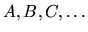

| Monkeys in a Regular Forest |
Consider the situation of an ideal forest, where trees grow on a regular finite euclidean lattice. At every site only one tree grows, and it can be of one among n species. Each species is denoted by a single character ({ } are valid species, for instance). Two trees of the same species are considered neighbors if the maximum absolute difference between their coordinates is one.
Families of (rather specialized) monkeys are released, one at a time, in this euclidean forest. Each family will occupy all neighboring tress of a single species which have not been taken yet by another family. The monkeys are released from left to right and from top to bottom.
Given the map of the forest, build the map of the monkeys families, starting with ``1'' and numbering them consecutively.
Next matrices (each matrix is a different instance to the problem) will be preceded by a line with a single ``%'' character and then the same structure as before.
The solution to each instance must be finished by a line with a single ``%'' character.
A B D E C C D F F W D D D D P W E W W W W % a A b B c d E t a a a a a c c t e f g h c a a t
1 2 3 4 5 5 3 6 6 7 3 3 3 3 8 7 9 7 7 7 7 % 1 2 3 4 5 6 7 8 1 1 1 1 1 5 5 8 9 10 11 12 5 1 1 8 %